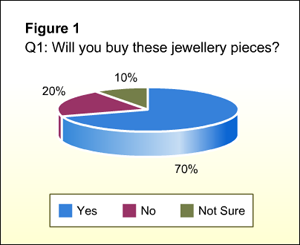

Presenting the Results and Stating the Findings
Brad and his group members interviewed 50 female teenagers. The data collected from these interviews is summarised in Table 1.
They want to present the results using charts and graphs. What charts or graphs are suitable for the 3 questions?
Click each question to view the details. In the next scene, we will see how the findings are described and summarised.
Q1
Table 1: Summary of Responses to the Face-to-face Interviews
| Question | Yes | No | Not sure |
| Q1:Will you buy these jewellery pieces? | 35 | 10 | 5 |
Responses for Question 1
A pie chart is suitable for this question.
It allows us to see each response type as a percentage of the total sample size.

Q2
Table 1: Summary of Responses to the Face-to-face Interviews
| Question | Rings | Brooches | Necklace with Pendants |
| Q2:Which type do you like most? | 28 | 13 | 9 |
Responses for Question 2
A pie chart can be used for question 2.
However, a bar chart may be a better option.
With a bar chart, the data values can be compared easily.

Q3
Table 1: Summary of Responses to the Face-to-face Interviews
| Question | Innovative design | Unique qualities | Environmentally friendly | Others |
| Q3:Why do you like it? | 35 | 25 | 11 | 10 |
Responses for Question 3
Again, a bar chart would be a better option.
With a bar chart, the data values can be compared easily.
For example, we can see that ‘Innovative design’ has 10 more responses compared to ‘Unique qualities’.

Note: For illustration purpose, we have used only 3 questions for this survey. Your survey should have more questions.
Click Next to continue.